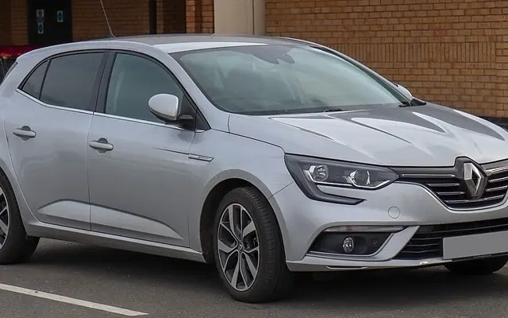

Par Motor › Precios por modelo › Renault Mégane
Precio de segunda mano · noviembre de 2026¿Cuánto vale un Renault Mégane de segunda mano?

Precio justo estimado de un Renault Mégane usado en España, año por año, con los kilómetros normales para su edad y en buen estado: de 2.900 € a 34.600 €. Para tasar el tuyo con sus kilómetros reales y su estado, usa el tasador gratis.
Precios del Renault Mégane por año
Mégane II (2002–2008)
Precio de nuevo: 1.6 115 CV, 16.000 € · 1.5 dCi 105 CV, 17.500 € · RS 2.0T 225 CV, 27.000 €
| Año | Km normales | 1.6 115 CV · Gasolina | 1.5 dCi 105 CV · Diésel | RS 2.0T 225 CV · Gasolina |
|---|---|---|---|---|
| 2008 | 100.000 km | 4.500 € | 4.800 € | 7.600 € |
| 2007 | 100.000 km | 4.200 € | 4.400 € | 7.000 € |
| 2006 | 100.000 km | 3.900 € | 4.100 € | 6.500 € |
| 2005 | 100.000 km | 3.600 € | 3.800 € | 6.100 € |
| 2004 | 100.000 km | 3.300 € | 3.500 € | 5.600 € |
| 2003 | 100.000 km | 3.100 € | 3.300 € | 5.200 € |
| 2002 | 100.000 km | 2.900 € | 3.000 € | 4.800 € |
Mégane III (2008–2016)
Precio de nuevo: 1.2 TCe 115 CV, 18.000 € · 1.5 dCi 110 CV, 20.000 € · 1.6 dCi 130 CV, 22.000 €
| Año | Km normales | 1.2 TCe 115 CV · Gasolina | 1.5 dCi 110 CV · Diésel | 1.6 dCi 130 CV · Diésel |
|---|---|---|---|---|
| 2016 | 100.000 km | 8.300 € | 9.900 € | 10.800 € |
| 2015 | 100.000 km | 8.100 € | 9.100 € | 10.100 € |
| 2014 | 100.000 km | 7.800 € | 8.500 € | 9.300 € |
| 2013 | 100.000 km | 7.300 € | 7.900 € | 8.700 € |
| 2012 | 100.000 km | 6.800 € | 7.300 € | 8.100 € |
| 2011 | 100.000 km | 6.300 € | 6.800 € | 7.500 € |
| 2010 | 100.000 km | 5.900 € | 6.300 € | 6.900 € |
| 2009 | 100.000 km | 5.400 € | 5.900 € | 6.400 € |
| 2008 | 100.000 km | 5.000 € | 5.400 € | 6.000 € |
Consume muchísimo aceite por un defecto de diseño y, si nadie lo vigila, el motor se queda sin aceite y se rompe. Renault llegó a reparar y reprogramar muchas unidades. Pregunta si se hizo esa reparación y comprueba que el nivel de aceite no baja entre revisiones.
Mégane IV (2016–2023)
Precio de nuevo: 1.3 TCe 140 CV, 23.000 € · 1.5 Blue dCi 115 CV, 24.000 € · E-Tech (enchufable) 160 CV, 32.000 €
| Año | Km normales | 1.3 TCe 140 CV · Gasolina | 1.5 Blue dCi 115 CV · Diésel | E-Tech (enchufable) 160 CV · Híbrido enchufable |
|---|---|---|---|---|
| 2023 | 50.000 km | 17.100 € | 17.200 € | 21.400 € |
| 2022 | 65.000 km | 15.900 € | 14.700 € | 19.900 € |
| 2021 | 80.000 km | 14.200 € | 13.500 € | 17.700 € |
| 2020 | 95.000 km | 12.300 € | 13.300 € | 15.400 € |
| 2019 | 100.000 km | 11.600 € | 13.100 € | 14.500 € |
| 2018 | 100.000 km | 11.300 € | 12.900 € | 14.100 € |
| 2017 | 100.000 km | 11.000 € | 12.700 € | 13.700 € |
| 2016 | 100.000 km | 10.600 € | 11.800 € | 13.300 € |
Consume muchísimo aceite por un defecto de diseño y, si nadie lo vigila, el motor se queda sin aceite y se rompe. Renault llegó a reparar y reprogramar muchas unidades. Pregunta si se hizo esa reparación y comprueba que el nivel de aceite no baja entre revisiones.
Mégane E-Tech eléctrico (2022–hoy)
Precio de nuevo: EV60 220 CV, 40.000 €
| Año | Km normales | EV60 220 CV · Eléctrico |
|---|---|---|
| 2026 | 5.000 km | 34.600 € |
| 2025 | 20.000 km | 29.400 € |
| 2024 | 35.000 km | 27.300 € |
| 2023 | 50.000 km | 25.300 € |
| 2022 | 65.000 km | 23.500 € |
Kilómetros normales: 15.000 al año en gasolina, híbridos y eléctricos, y 20.000 en diésel, con un máximo de 100.000 km (por encima no tasamos: el precio depende demasiado del historial de cada coche). Cifras redondeadas a 100 €.
Preguntas frecuentes
¿Cuánto vale un Renault Mégane de segunda mano?
Según el año, la versión y los kilómetros, un Renault Mégane usado vale hoy de 2.900 € a 34.600 € en España. El más barato de nuestra tabla es un 1.6 de 2002 (2.900 €) y el más caro un EV60 de 2026 (34.600 €). Son precios justos estimados entre particulares y profesionales, con los kilómetros normales para su edad y en buen estado.
¿Cuánto valor pierde un Renault Mégane al año?
Con unos años encima, un Renault Mégane pierde alrededor de un 7 % de su valor cada año (calculado sobre el EV60 de la generación Mégane E-Tech eléctrico). Los primeros años la caída es mayor y a partir de los 70.000 km se acelera.
¿Qué motorizaciones tiene el Renault Mégane?
En nuestra base de datos hay versiones gasolina, diésel, híbrido enchufable y eléctrico, en 4 generaciónes: Mégane II, Mégane III, Mégane IV y Mégane E-Tech eléctrico.
¿Qué motores del Renault Mégane dan problemas?
Ojo con el Renault y Nissan 1.2 TCe / 1.2 DIG-T (consumo de aceite) (1.2 TCe, 2012–2018): son motores con fallos graves y muy extendidos. Antes de comprar uno, pide el historial de mantenimiento y comprueba si ya se hizo la reparación. El resto de motores no tiene problemas fuera de lo normal.
¿Cómo sé si me piden demasiado por un Renault Mégane?
Abre el tasador de Par Motor, elige el Renault Mégane, el año y los kilómetros reales, y escribe lo que te piden. Te diremos si está por debajo del precio justo (chollo) o por encima (caro). Es gratis y no pide registro ni matrícula.
Otros Renault
- Arkana
- Austral
- Captur
- Clio
- Espace
- Fluence
- Kadjar
- Kangoo
- Koleos
- Laguna
- Mégane E-Tech
- Rafale
- Renault 4
- Renault 5
- Scénic
- Symbioz
- Talisman
- Twingo
- Zoe
Compara su coste real
El precio de compra es solo una parte. Mira cuánto te costaría al mes con combustible, seguro, neumáticos, mantenimiento y lo que pierde de valor.
Abrir el comparador →